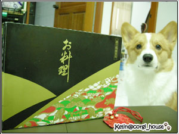
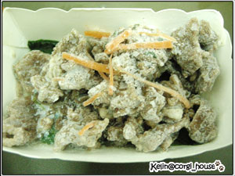
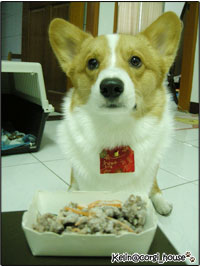
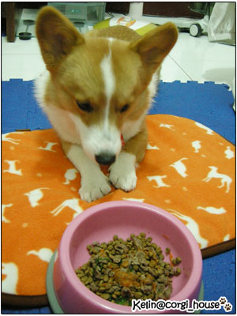

新年快樂!!!!新年快樂!!!! 好久沒來亮亮相了～先祝大家牛年超牛逼啦！
好久沒來亮亮相了～先祝大家牛年超牛逼啦！
上週看到卡內麻的K週刊介紹了 GoBar狗狗春節年菜的菜單
酷耶！菜色看起來很豐盛價格也才199元
(借了GOBAR的圖.因為我拍的實在是... 哈!看下去就知我拍的對比了)
哈!看下去就知我拍的對比了)
所以幫摩卡卡訂了一個~過年嘛!! 狗子也要來點好料..
雖然平常他已經過很爽了!!
好想當狗啊!!命真好....
這是年菜的外盒~看起來是不是很精緻啊!!
還送了一個小福袋，可以掛在狗子身上！

袋子上還有貼心的叮嚀！真好~
像我這腦子不好的，一回來早就忘了老闆娘一開始說的菜名了!哈哈
重點是上面還有 KULIMU & ICE 兄妹倆可愛的大頭照耶~

鏘鏘鏘~OPEN 泥看!這就我拍的... 什嘛東西啊~
什嘛東西啊~
因為冷凍的關西都結霜了! 什嘛都看不到 
所以要放他們的圖，免得毀了人家的名聲! 哈哈
一共有五種菜色~再搭配３種醬料
從左到右是：波菜薄荷燉羊肉、法式雞肝泥、起司牛肉丸串 、
迷迭香烤豬里肌、香煎鮭魚米三明治，
今天先開動的是 波菜薄荷燉羊肉＋蕃茄醬
一盒一盒的微波解凍加熱就好嘍！很方便

優雅的摩卡小紳士乖乖的坐好等麻麻拍照～
小福袋也請拔拔幫他帶上，好可愛歐！
紅白配好看耶~馬上就有過節的fu了
 
加熱解凍完拿出來聞~媽呀!好香歐! 淡淡的蒜香加羊肉味
淡淡的蒜香加羊肉味
因為份量沒有很多，怕小子吃不飽~
所以又另外加了一點點歐奇斯的飼料
但是因為卡卡很急，我只好快點拍拍照加了飼料，才想到......???
哇咧?老娘還沒試吃耶~ 

 悶了.....出錢的人一口也沒吃到....
悶了.....出錢的人一口也沒吃到....

你看他超急的~這個時候已經一直發出 嗚嗚嗚的叫聲 催我放飯了! 

摩卡卡：快點快點!!麻麻快點啦!! 吉時已到...

一說好，當然吃超快的!傻眼....因為他平常吃東西很慢會咬 咬
今天都用吞的..
那天去拿預購的年菜，因為知道卡內家會去，所以我們在goBar停留
還遇到了ROCKY跟ＫＵＭＡ堂主跟副堂主，但沒帶相機
所以一張照片都沒拍到！  只好用想像的吧！哈
只好用想像的吧！哈
堂主果然名不虛傳啊！哈 一去就很有氣勢的下馬威了！
一去就很有氣勢的下馬威了！
不過很不好意思，我們一去也害他們倆被用嘴套，都沒玩到！拍謝吶！
至於卡內的魅力也是一流，摩卡一直死命黏著卡內，
也把他全身都舔了一遍了吧！
 再次謝謝卡內麻的分享~讓摩卡享受到美食嘍!~
再次謝謝卡內麻的分享~讓摩卡享受到美食嘍!~
希望大家新的一年~都很平安健康歐!! 恭禧發財